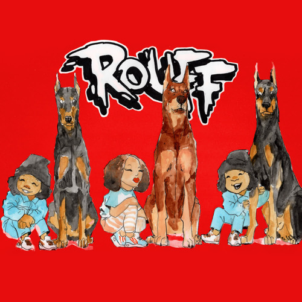
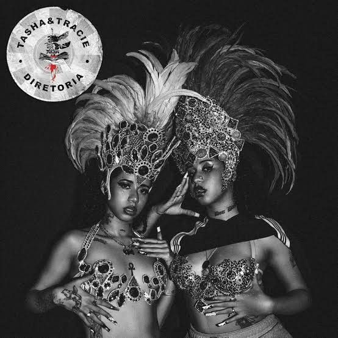
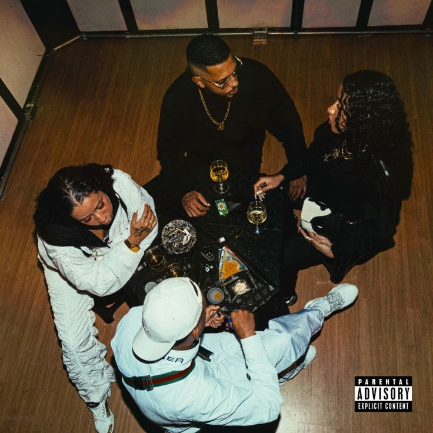

Clipe - Salve
.gif)
é uma dupla de rappers brasileiras formada pelas irmãs gêmeas Tasha Okereke e Tracie Okereke,
que atuam na arte, moda, ativismo e musica. Elas unem o rap com o funk em suas canções e abordam diversos temas ligados a cultura negra,
vivência periférica, sexo e ostentação, falando sobre moda, confiança e autoestima.
A história de Tasha & Tracie como personas artísticas começou em 2014, com o blog “Expensive $hit”,
onde postavam looks e conteúdos relacionados à vida de duas jovens “da quebrada”. Tudo embalado por uma
sofisticação estética cujas referências partiam do próprio universo que as cercava.
Entravam em cena looks customizados com roupas dadas à mãe ou compradas em brechós.

O projeto Expensive Shit e MPIF (Mulher Preta Independente de Favela) criado por Tasha e Tracie Okereke
vem com o intuito de trazer a autonomia financeira pessoal e autoestima para os jovens negros e favelados.
Com tutoriais básicos de costumização desde o ínicio, para ajudar as necessidades de cada um com coisas
que você tem em casa, como: tesoura e uma agulha, que são itens básicos e que ajudam 100% na hora de sua costumização.
("Não ter as coisas nos ensinou a ver o potêncial em tudo) diz Tracie em sua entrevista com a TV Cultura")
("Nós somos a classe que mais trabalha, então porque não trabalhar em pró de gente?" diz Tasha).
| 
Álbum Cachorraz Kamikaze - Lançado em 2019 1.Flo Jo | 
EP Diretoria - Lançado em 2021
1.Wanna Bee's (intro) | 
Álbum Yin Yang - Lançado em 2023
1.Dia de Baile |